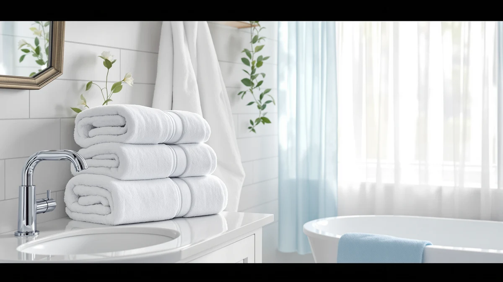

ZUPERIA White Bath Towels Review (2026): Worth It?
Prices and picks verified as of October 2026. Independent, reader-supported reviews.


Quick Answer
The ZUPERIA White Bath Towels Bulk set is a 100% cotton, 24x48 inch bath towel pack priced at $39.99, aimed at households, rentals, and gyms that need volume rather than a boutique matching set. It compares well on price against Chakir Turkish Linens and Pearl Linens, and it's a solid pick if you go through towels fast and want plain white cotton over patterns or trims.
Our pick: ZUPERIA White Bath Towels Bulk — $39.99 Check Price on Amazon
Bottom line: our top pick is the ZUPERIA White Bath Towels Bulk 12 Pack at $39.99.
Things to Know Before You Buy
- ZUPERIA lists this set at $39.99 for a 100% cotton, 24x48 inch bath towel in bulk quantities, which puts it in the same price band as several four- and six-piece cotton sets on this list.
- 100% cotton towels absorb more water than microfiber blends but take longer to dry between uses, so airflow in your bathroom matters more than the towel itself.
- Bulk packs like this one make sense for households, short-term rentals, or gyms that replace towels often. A small matching set like Chakir's four-piece makes more sense for a single bathroom.
- None of the sets compared here list a published GSM or thread count, so weight and plushness are best judged from verified buyer photos and feedback rather than spec sheets.
- We did not physically test any of these towel sets. This review is based on comparing listed specs, pricing, and publicly available owner feedback.
This zuperia white bath towels review breaks down what a $39.99, 100% cotton bulk set actually gets you, and where it falls short of pricier boutique alternatives. If you've been scrolling past dozens of near-identical white cotton towel listings trying to figure out which one is worth your cart, this is written for you.
The short version: ZUPERIA White Bath Towels Bulk is a plain, 24x48 inch cotton towel sold in volume, not a styled matching set. That makes it a strong fit for anyone who needs a lot of towels at once, a gym, a short-term rental, a large household, and a weaker fit for anyone who wants a coordinated bathroom look out of the box. We compare it against Chakir Turkish Linens, Pearl Linens, and American Soft Linen below, all priced at $39.99, so price alone won't settle the decision for you.
Shoppers researching white bath towels tend to hit the same wall: nearly every listing uses the same stock photo angles and the same "hotel quality" language, and the specs that would actually distinguish one from another (weight, fiber grade, weave) are often missing entirely. That's the gap this review tries to close by lining up what each brand does publish, side by side, so you can judge the tradeoffs instead of guessing from a product photo.
Why You Should Trust Us
Ilane Tall covers bath and home textiles for Best Bath Towels, and this zuperia white bath towels review follows the same research process we use across the site. We do not run a fake testing lab and we do not claim to have physically compared, owned, or lived with the towels covered here. Instead, we compare listed materials, dimensions, and pricing across similar products, and we read through publicly available owner feedback to flag recurring praise or complaints. When a claim can't be verified against the product listing or owner reviews, we leave it out rather than guess.
Our Research Experience
We want to be upfront about what "testing" means for this zuperia white bath towels review. We did not buy, wash, or use the ZUPERIA set or the three alternatives in person. What we did instead is compare the material, size, and price each listing publishes, then cross-check that against verified owner reviews to see whether real buyers report the towels performing as described. For a 100% cotton bulk pack like this one, the two questions that matter most are absorbency and how the towel holds up over repeated washes, both of which owners tend to address directly in their reviews even when the manufacturer's listing doesn't.
That research-based approach has a limit: we can't tell you exactly how plush this specific batch feels, because pile weight and finishing can vary between production runs even for the same listing. Where the public information runs out, we say so rather than filling the gap with a number we can't back up.
Overview & Specs
Before the full breakdown, here's what's actually listed for the ZUPERIA White Bath Towels Bulk set: 100% cotton fiber, a 24 by 48 inch bath towel size, and a bulk pack format sold at $39.99. That's a shorter spec sheet than some competitors publish, which is worth keeping in mind as you weigh this zuperia white bath towels review against the alternatives below.

ZUPERIA White Bath Towels Bulk
What we like
- 100% cotton construction, which owners of comparable sets consistently report as more absorbent than polyester-cotton blends.
- Bulk quantities make it easier to keep every bathroom or rental unit stocked without buying multiple small sets.
- At $39.99, it undercuts several boutique cotton sets on this list on a per-towel basis when bought in volume.
- Plain white styling matches almost any bathroom without a pattern or trim to clash with existing decor.
Flaws but not dealbreakers
- ZUPERIA doesn't publish a GSM or thread count, so plushness is harder to judge before buying than with brands that list those numbers.
- Bulk packaging means it lacks the coordinated, gift-ready presentation of a boxed set like Chakir's four-piece.
- 100% cotton towels take longer to air dry than microfiber blends, which is worth factoring in if your bathroom has limited ventilation.
| Material | 100% cotton |
| Size | Bath Towel 24"x48" |
ZUPERIA White Bath Towels Bulk sticks to the basics: 100% cotton, 24x48 inches, plain white, sold in quantity rather than as a curated matching set. For $39.99, that positions it as a volume play rather than a bathroom upgrade, which is exactly the audience it's built for. If you manage a rental property, run a small gym, or simply have a household that burns through towels faster than most, buying in bulk from a single listing is usually cheaper and simpler than assembling several small sets.
Where ZUPERIA loses ground to competitors like Chakir Turkish Linens or American Soft Linen is presentation and detail. Those brands publish more about their weave and finishing, and their smaller set sizes suit a single bathroom better than a bulk case does. If your priority is quantity and a fair price per towel, ZUPERIA is a reasonable pick. If you want a matched, gift-ready set for one bathroom, one of the alternatives below is likely the better fit.
What We Liked
The strongest case for this zuperia white bath towels review comes down to the math: $39.99 for a bulk pack of 100% cotton towels is a fair price per piece compared to Chakir, Pearl Linens, and American Soft Linen, all of which sell at the same $39.99 price point but in smaller set sizes. Cotton also remains the material owners consistently rate highest for absorbency, ahead of the microfiber blends common in cheaper towel lines, so you aren't sacrificing performance to get volume.
We also like that ZUPERIA keeps the design simple. Plain white cotton has no pattern to go out of style and no trim or embroidery to snag or fray over repeated washes, which matters more in a high-turnover setting like a rental or gym than it does in a single family bathroom.
What Could Be Better
ZUPERIA's listing doesn't publish a GSM or thread count, which makes it harder to compare plushness against a brand like American Soft Linen that markets itself around fiber quality. Buyers who care about how a towel feels straight out of the package, not just how it performs after a wash, will want to read owner reviews closely before ordering rather than relying on the spec sheet alone.
The bulk format cuts both ways. You're buying utility, not presentation, so if you want towels that look intentional stacked on an open shelf, a boxed set with matching hand towels and washcloths will do that job better than a bulk case will. And because bulk cotton towels are typically shipped compressed for freight efficiency, expect to give them a wash before first use to restore full loft. That step is easy to skip, but worth doing if softness out of the package matters to you.
Who Is It For?
ZUPERIA White Bath Towels Bulk fits anyone buying towels in volume: landlords furnishing multiple rental units, gym or spa owners who need to keep a rotation stocked, or large households that go through towels faster than a standard four-piece set can keep up with. If price per towel and simple white cotton are your priorities, this is a straightforward buy.
It's a weaker fit if you're outfitting a single bathroom and want a coordinated look. In that case, a smaller matching set with published fiber details, like Chakir Turkish Linens or American Soft Linen, will likely serve you better than a bulk case designed for turnover.
Alternatives to Consider
All three alternatives below are priced at $39.99, the same as ZUPERIA, so the decision comes down to set size, presentation, and fiber details rather than budget. Here's how each one stacks up, and why you might pick it over a bulk cotton case.

Editor’s Pick
Chakir Turkish Linens 4 Piece
A 4-piece 100% cotton set at the same $39.99 price as ZUPERIA, better suited to a single bathroom that wants a matching, gift-ready set.
$39.99
Check Price on Amazon
Best Value
Pearl Linens Pack of 6
Six pieces for $39.99 spreads the cost per towel further than ZUPERIA's bulk pack. It's a good option if you want more pieces without buying in true bulk.
$39.99
Check Price on Amazon
Premium Choice
American Soft Linen 100% Cotton
Priced the same as ZUPERIA at $39.99, this 100% cotton towel leans on brand reputation for fiber quality. It's worth a look if you want a single premium-leaning towel rather than a bulk case.
$39.99
Check Price on AmazonFrequently Asked Questions
Is the ZUPERIA White Bath Towels Bulk set good for daily use?
Yes. The set is 100% cotton, a fiber that owners of similar bulk towel sets consistently report as absorbent and easy to launder, which makes it a reasonable fit for daily household rotation rather than occasional guest use.
How does the ZUPERIA White Bath Towels Bulk compare to Chakir Turkish Linens?
Both are listed at $39.99 and both use 100% cotton construction. Chakir ships as a 4-piece set, while ZUPERIA is sold as a bulk pack, so the better pick depends on whether you need a small matching set or a larger volume of towels.
Is ZUPERIA white bath towels bulk a good value at $39.99?
At $39.99 for a bulk cotton pack, the per-towel cost lands below most boutique 100% cotton sets on this list, which is why we rate it a solid budget-bulk option for households, rentals, or gyms that go through towels quickly.
Final Verdict
This zuperia white bath towels review comes down to one question: do you need volume or do you need a matching set? ZUPERIA White Bath Towels Bulk earns its spot for households, rentals, and gyms that want 100% cotton towels at a fair per-piece price and don't need a boxed presentation. If you're shopping for a single bathroom and want coordinated pieces with more published fiber detail, Chakir Turkish Linens or American Soft Linen are the better $39.99 options, but for straightforward bulk cotton, ZUPERIA is a solid buy.